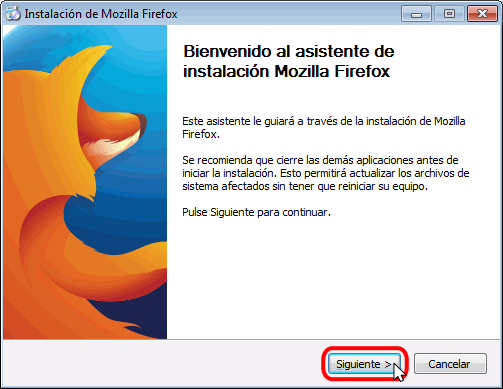
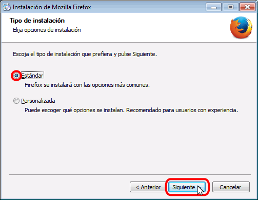
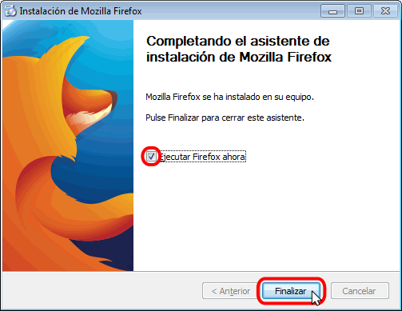

Instalar Firefox en Windows
Nota: Las capturas siguientes corresponden a Firefox 48 (64 bits). Versiones posteriores pueden ser ligeramente diferentes.
Haciendo doble clic sobre el instalador de Firefox, se pone en marcha el asistente de instalación.
La primera pantalla anuncia que se va a instalar Firefox. Hay que pulsar el botón Siguiente para instalar el programa o el botón Cancelar para no instalarlo.

La segunda pantalla permite elegir el tipo de instalación. Para este curso es suficiente elegir la opción Estándar:

La tercera pantalla permite elegir el directorio de instalación y si Firefox será el navegador predeterminado.

A continuación, se instalará Firefox (la instalación dura unos segundos).

Una vez completada la instalación, se muestra la pantalla final.
